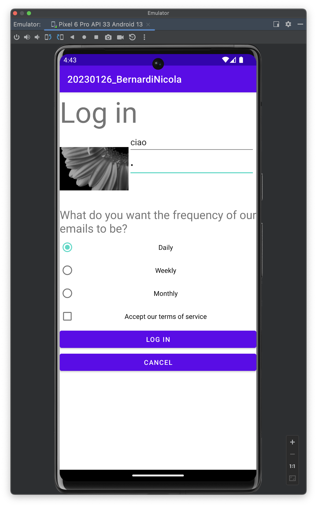
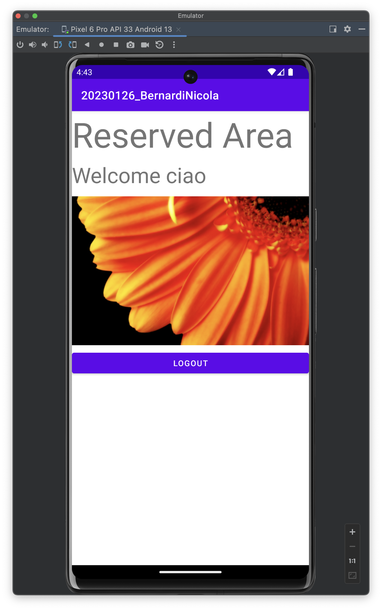

Login e welcome
Consisteva nel fare un activity dove si inseriva username e password, selezionando la frequenza della newsletter e (obbligatorio) l'accettazione dei termini di servizio. Una volta fatto ciò, l'utente veniva portato in un'activity che doveva assomigliare ad un'area riservata
 